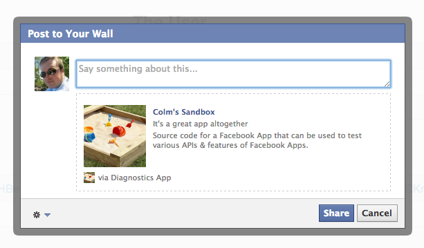

FB Diagnostics
Facebook App Diagnostics at a glance
Project maintained by colmdoyle Hosted on GitHub Pages — Theme by mattgraham
FB Diagnostics
For the sake of debugging a problem, sometimes it's useful to have an app that has an "at a glance" output of various different Facebook features / endpoints. This is just such a tool.
It doesn't attempt to skin itself as a full app. It's just a dashboard of information and one click access to various Facebook Dialogs and other publishing endpoints, like OG Actions and /feed
Examples
You can see it running as a Page Tab here
You can see it running as a Canvas App here
Screenshots


License
Copyright 2012 Colm Doyle
Licensed under the Apache License, Version 2.0 (the "License"); you may not use this file except in compliance with the License. You may obtain a copy of the License at http://www.apache.org/licenses/LICENSE-2.0
Unless required by applicable law or agreed to in writing, software distributed under the License is distributed on an "AS IS" BASIS, WITHOUT WARRANTIES OR CONDITIONS OF ANY KIND, either express or implied. See the License for the specific language governing permissions and limitations under the License.